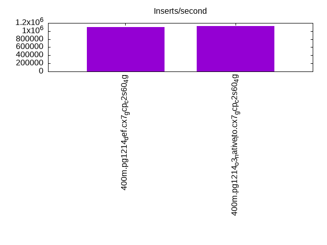
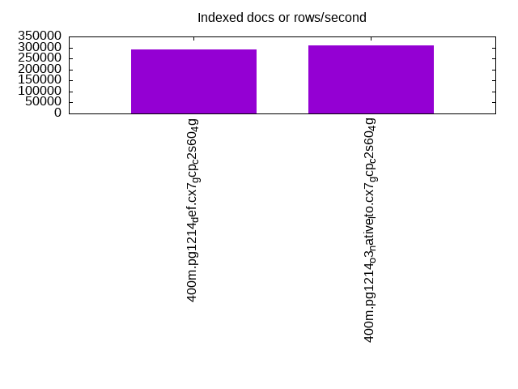
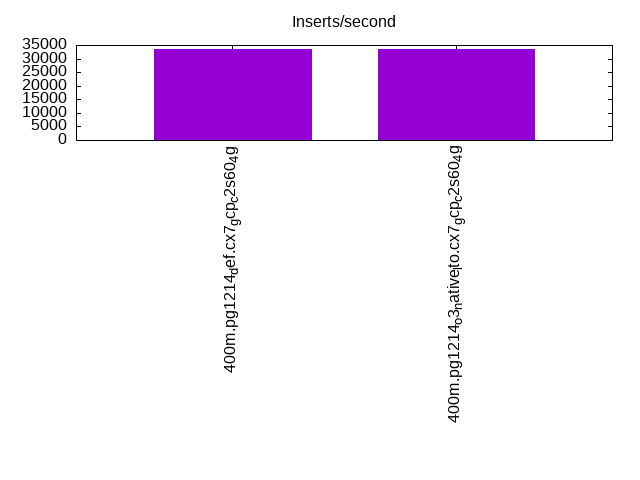
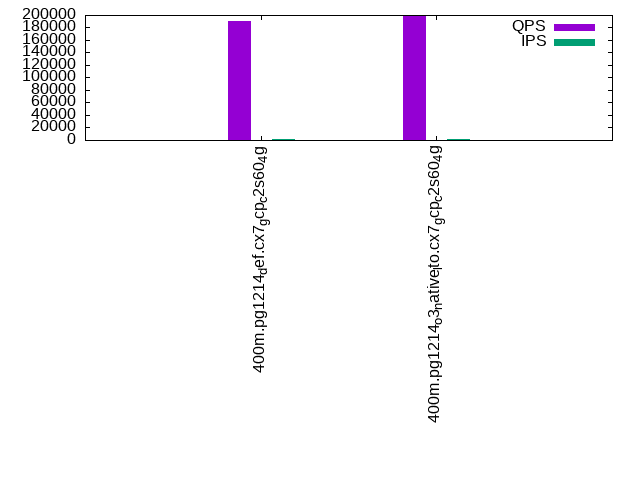
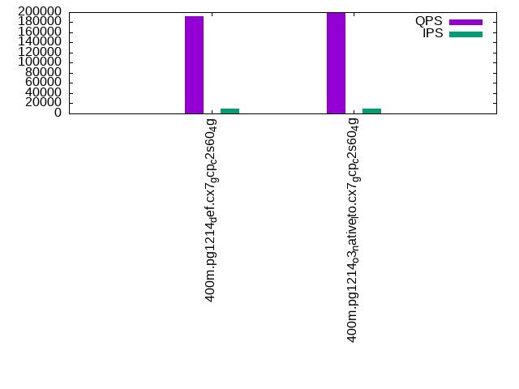
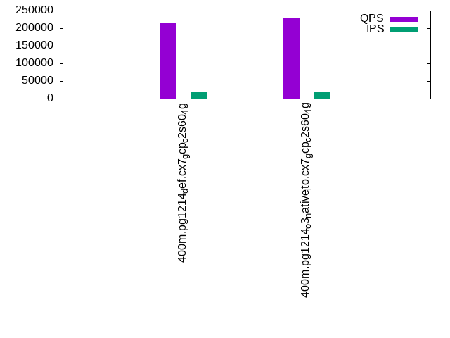

This is a report for the insert benchmark with 400M docs and 20 client(s). It is generated by scripts (bash, awk, sed) and Tufte might not be impressed. An overview of the insert benchmark is here and a short update is here. Below, by DBMS, I mean DBMS+version.config. An example is my8020.c10b40 where my means MySQL, 8020 is version 8.0.20 and c10b40 is the name for the configuration file.
The test server is a c2-standard-60 from GCP with 30 cores, hyperthreading disabled, 240G RAM and 3T from XFS and SW RAID 0 striped over 8 local NVMe drives. The benchmark was run with 20 clients and there were 1 or 2 connections per client (1 for queries, 1 for inserts). The benchmark loads 400M rows without secondary indexes, creates secondary indexes, loads another 400M rows then does 3 read+write tests for one hour each that do queries as fast as possible with 100, 500 and then 1000 writes/second/client concurrent with the queries. Each read-write test runs for 1800 seconds. The test was configured to use one table. The database fits in the OS page cache but not the DBMS buffer pool. Clients and the DBMS share one server. The per-database configs are in the per-database subdirectories here.
The tested DBMS are:
The numbers are inserts/s for l.i0 and l.i1, indexed docs (or rows) /s for l.x and queries/s for q*.2. The values are the average rate over the entire test for inserts (IPS) and queries (QPS). The range of values for IPS and QPS is split into 3 parts: bottom 25%, middle 50%, top 25%. Values in the bottom 25% have a red background, values in the top 25% have a green background and values in the middle have no color. A gray background is used for values that can be ignored because the DBMS did not sustain the target insert rate. Red backgrounds are not used when the minimum value is within 80% of the max value.
| dbms | l.i0 | l.x | l.i1 | q100.1 | q500.1 | q1000.1 |
|---|---|---|---|---|---|---|
| 400m.pg1214_def.cx7_gcp_c2s60_4g | 1095890 | 291831 | 33690 | 190522 | 191892 | 216892 |
| 400m.pg1214_o3_native_lto.cx7_gcp_c2s60_4g | 1120448 | 310637 | 33650 | 198191 | 199459 | 227352 |
This lists the average rate of inserts/s for the tests that do inserts concurrent with queries. For such tests the query rate is listed in the table above. The read+write tests are setup so that the insert rate should match the target rate every second. Cells that are not at least 95% of the target have a red background to indicate a failure to satisfy the target.
| dbms | q100.1 | q500.1 | q1000.1 |
|---|---|---|---|
| pg1214_def.cx7_gcp_c2s60_4g | 1976 | 9885 | 19640 |
| pg1214_o3_native_lto.cx7_gcp_c2s60_4g | 1976 | 9890 | 19661 |
| target | 2000 | 10000 | 20000 |
l.i0: load without secondary indexes. Graphs for performance per 1-second interval are here.
Average throughput:
Insert response time histogram: each cell has the percentage of responses that take <= the time in the header and max is the max response time in seconds. For the max column values in the top 25% of the range have a red background and in the bottom 25% of the range have a green background. The red background is not used when the min value is within 80% of the max value.
| dbms | 256us | 1ms | 4ms | 16ms | 64ms | 256ms | 1s | 4s | 16s | gt | max |
|---|---|---|---|---|---|---|---|---|---|---|---|
| pg1214_def.cx7_gcp_c2s60_4g | 19.294 | 77.769 | 2.865 | 0.031 | 0.028 | 0.014 | 0.858 | ||||
| pg1214_o3_native_lto.cx7_gcp_c2s60_4g | 26.679 | 70.318 | 2.939 | 0.022 | 0.025 | 0.016 | 0.001 | 1.283 |
Performance metrics for the DBMS listed above. Some are normalized by throughput, others are not. Legend for results is here.
ips qps rps rmbps wps wmbps rpq rkbpq wpi wkbpi csps cpups cspq cpupq dbgb1 dbgb2 rss maxop p50 p99 tag 1095890 0 296 2.7 2464.6 463.6 0.000 0.003 0.002 0.433 287892 58.5 0.263 16 43.0 112.4 NA 0.858 60861 11687 400m.pg1214_def.cx7_gcp_c2s60_4g 1120448 0 320 2.5 2481.0 469.8 0.000 0.002 0.002 0.429 308124 58.1 0.275 16 43.0 112.4 NA 1.283 62158 12186 400m.pg1214_o3_native_lto.cx7_gcp_c2s60_4g
l.x: create secondary indexes.
Average throughput:
Performance metrics for the DBMS listed above. Some are normalized by throughput, others are not. Legend for results is here.
ips qps rps rmbps wps wmbps rpq rkbpq wpi wkbpi csps cpups cspq cpupq dbgb1 dbgb2 rss maxop p50 p99 tag 291831 0 1662 42.3 583.5 108.8 0.006 0.148 0.002 0.382 1386 3.4 0.005 3 78.3 148.0 0.0 0.002 NA NA 400m.pg1214_def.cx7_gcp_c2s60_4g 310637 0 1457 44.0 596.7 115.3 0.005 0.145 0.002 0.380 1937 3.4 0.006 3 78.3 150.2 0.0 0.002 NA NA 400m.pg1214_o3_native_lto.cx7_gcp_c2s60_4g
l.i1: continue load after secondary indexes created. Graphs for performance per 1-second interval are here.
Average throughput:
Insert response time histogram: each cell has the percentage of responses that take <= the time in the header and max is the max response time in seconds. For the max column values in the top 25% of the range have a red background and in the bottom 25% of the range have a green background. The red background is not used when the min value is within 80% of the max value.
| dbms | 256us | 1ms | 4ms | 16ms | 64ms | 256ms | 1s | 4s | 16s | gt | max |
|---|---|---|---|---|---|---|---|---|---|---|---|
| pg1214_def.cx7_gcp_c2s60_4g | 0.210 | 6.450 | 88.001 | 5.339 | nonzero | 0.467 | |||||
| pg1214_o3_native_lto.cx7_gcp_c2s60_4g | 0.209 | 6.571 | 87.937 | 5.282 | 0.001 | 0.623 |
Performance metrics for the DBMS listed above. Some are normalized by throughput, others are not. Legend for results is here.
ips qps rps rmbps wps wmbps rpq rkbpq wpi wkbpi csps cpups cspq cpupq dbgb1 dbgb2 rss maxop p50 p99 tag 33690 0 71267 659.8 61200.6 594.2 2.115 20.055 1.817 18.060 129432 13.0 3.842 116 170.2 236.9 0.0 0.467 1698 749 400m.pg1214_def.cx7_gcp_c2s60_4g 33650 0 72355 664.8 61181.5 592.8 2.150 20.232 1.818 18.040 130254 12.6 3.871 112 170.2 235.1 0.0 0.623 1698 749 400m.pg1214_o3_native_lto.cx7_gcp_c2s60_4g
q100.1: range queries with 100 insert/s per client. Graphs for performance per 1-second interval are here.
Average throughput:
Query response time histogram: each cell has the percentage of responses that take <= the time in the header and max is the max response time in seconds. For max values in the top 25% of the range have a red background and in the bottom 25% of the range have a green background. The red background is not used when the min value is within 80% of the max value.
| dbms | 256us | 1ms | 4ms | 16ms | 64ms | 256ms | 1s | 4s | 16s | gt | max |
|---|---|---|---|---|---|---|---|---|---|---|---|
| pg1214_def.cx7_gcp_c2s60_4g | 99.912 | 0.085 | 0.002 | 0.001 | nonzero | 0.027 | |||||
| pg1214_o3_native_lto.cx7_gcp_c2s60_4g | 99.926 | 0.071 | 0.002 | 0.001 | nonzero | 0.026 |
Insert response time histogram: each cell has the percentage of responses that take <= the time in the header and max is the max response time in seconds. For max values in the top 25% of the range have a red background and in the bottom 25% of the range have a green background. The red background is not used when the min value is within 80% of the max value.
| dbms | 256us | 1ms | 4ms | 16ms | 64ms | 256ms | 1s | 4s | 16s | gt | max |
|---|---|---|---|---|---|---|---|---|---|---|---|
| pg1214_def.cx7_gcp_c2s60_4g | 0.363 | 99.593 | 0.044 | 0.168 | |||||||
| pg1214_o3_native_lto.cx7_gcp_c2s60_4g | 0.603 | 99.392 | 0.004 | 0.001 | 0.322 |
Performance metrics for the DBMS listed above. Some are normalized by throughput, others are not. Legend for results is here.
ips qps rps rmbps wps wmbps rpq rkbpq wpi wkbpi csps cpups cspq cpupq dbgb1 dbgb2 rss maxop p50 p99 tag 1976 190522 3981 39.5 3959.6 50.8 0.021 0.212 2.004 26.348 680052 63.0 3.569 99 171.0 226.1 0.0 0.027 9418 9030 400m.pg1214_def.cx7_gcp_c2s60_4g 1976 198191 3800 38.6 3962.6 50.1 0.019 0.200 2.006 25.980 707664 62.7 3.571 95 171.1 219.9 0.0 0.026 9781 9401 400m.pg1214_o3_native_lto.cx7_gcp_c2s60_4g
q500.1: range queries with 500 insert/s per client. Graphs for performance per 1-second interval are here.
Average throughput:
Query response time histogram: each cell has the percentage of responses that take <= the time in the header and max is the max response time in seconds. For max values in the top 25% of the range have a red background and in the bottom 25% of the range have a green background. The red background is not used when the min value is within 80% of the max value.
| dbms | 256us | 1ms | 4ms | 16ms | 64ms | 256ms | 1s | 4s | 16s | gt | max |
|---|---|---|---|---|---|---|---|---|---|---|---|
| pg1214_def.cx7_gcp_c2s60_4g | 99.650 | 0.337 | 0.012 | 0.001 | nonzero | 0.028 | |||||
| pg1214_o3_native_lto.cx7_gcp_c2s60_4g | 99.689 | 0.299 | 0.011 | 0.001 | nonzero | nonzero | 0.226 |
Insert response time histogram: each cell has the percentage of responses that take <= the time in the header and max is the max response time in seconds. For max values in the top 25% of the range have a red background and in the bottom 25% of the range have a green background. The red background is not used when the min value is within 80% of the max value.
| dbms | 256us | 1ms | 4ms | 16ms | 64ms | 256ms | 1s | 4s | 16s | gt | max |
|---|---|---|---|---|---|---|---|---|---|---|---|
| pg1214_def.cx7_gcp_c2s60_4g | 0.344 | 99.610 | 0.045 | 0.209 | |||||||
| pg1214_o3_native_lto.cx7_gcp_c2s60_4g | 0.536 | 99.410 | 0.054 | nonzero | 0.269 |
Performance metrics for the DBMS listed above. Some are normalized by throughput, others are not. Legend for results is here.
ips qps rps rmbps wps wmbps rpq rkbpq wpi wkbpi csps cpups cspq cpupq dbgb1 dbgb2 rss maxop p50 p99 tag 9885 191892 18760 188.3 19530.8 208.9 0.098 1.005 1.976 21.639 664482 65.5 3.463 102 175.9 223.5 0.0 0.028 9541 8934 400m.pg1214_def.cx7_gcp_c2s60_4g 9890 199459 18235 186.0 19514.5 208.0 0.091 0.955 1.973 21.539 690985 65.3 3.464 98 176.0 220.6 0.0 0.226 9861 9206 400m.pg1214_o3_native_lto.cx7_gcp_c2s60_4g
q1000.1: range queries with 1000 insert/s per client. Graphs for performance per 1-second interval are here.
Average throughput:
Query response time histogram: each cell has the percentage of responses that take <= the time in the header and max is the max response time in seconds. For max values in the top 25% of the range have a red background and in the bottom 25% of the range have a green background. The red background is not used when the min value is within 80% of the max value.
| dbms | 256us | 1ms | 4ms | 16ms | 64ms | 256ms | 1s | 4s | 16s | gt | max |
|---|---|---|---|---|---|---|---|---|---|---|---|
| pg1214_def.cx7_gcp_c2s60_4g | 99.435 | 0.544 | 0.020 | 0.001 | nonzero | 0.043 | |||||
| pg1214_o3_native_lto.cx7_gcp_c2s60_4g | 99.477 | 0.503 | 0.019 | 0.001 | nonzero | 0.064 |
Insert response time histogram: each cell has the percentage of responses that take <= the time in the header and max is the max response time in seconds. For max values in the top 25% of the range have a red background and in the bottom 25% of the range have a green background. The red background is not used when the min value is within 80% of the max value.
| dbms | 256us | 1ms | 4ms | 16ms | 64ms | 256ms | 1s | 4s | 16s | gt | max |
|---|---|---|---|---|---|---|---|---|---|---|---|
| pg1214_def.cx7_gcp_c2s60_4g | 1.643 | 93.034 | 5.319 | 0.004 | 0.520 | ||||||
| pg1214_o3_native_lto.cx7_gcp_c2s60_4g | 1.597 | 93.272 | 5.128 | 0.003 | 0.552 |
Performance metrics for the DBMS listed above. Some are normalized by throughput, others are not. Legend for results is here.
ips qps rps rmbps wps wmbps rpq rkbpq wpi wkbpi csps cpups cspq cpupq dbgb1 dbgb2 rss maxop p50 p99 tag 19640 216892 37936 384.3 37297.3 398.6 0.175 1.814 1.899 20.781 675428 69.8 3.114 97 189.4 249.9 0.0 0.043 10580 8071 400m.pg1214_def.cx7_gcp_c2s60_4g 19661 227352 38049 384.6 37303.1 400.8 0.167 1.732 1.897 20.873 705286 69.7 3.102 92 189.4 249.9 0.0 0.064 11092 8279 400m.pg1214_o3_native_lto.cx7_gcp_c2s60_4g
l.i0: load without secondary indexes
Performance metrics for all DBMS, not just the ones listed above. Some are normalized by throughput, others are not. Legend for results is here.
ips qps rps rmbps wps wmbps rpq rkbpq wpi wkbpi csps cpups cspq cpupq dbgb1 dbgb2 rss maxop p50 p99 tag 1095890 0 296 2.7 2464.6 463.6 0.000 0.003 0.002 0.433 287892 58.5 0.263 16 43.0 112.4 NA 0.858 60861 11687 400m.pg1214_def.cx7_gcp_c2s60_4g 1120448 0 320 2.5 2481.0 469.8 0.000 0.002 0.002 0.429 308124 58.1 0.275 16 43.0 112.4 NA 1.283 62158 12186 400m.pg1214_o3_native_lto.cx7_gcp_c2s60_4g
l.x: create secondary indexes
Performance metrics for all DBMS, not just the ones listed above. Some are normalized by throughput, others are not. Legend for results is here.
ips qps rps rmbps wps wmbps rpq rkbpq wpi wkbpi csps cpups cspq cpupq dbgb1 dbgb2 rss maxop p50 p99 tag 291831 0 1662 42.3 583.5 108.8 0.006 0.148 0.002 0.382 1386 3.4 0.005 3 78.3 148.0 0.0 0.002 NA NA 400m.pg1214_def.cx7_gcp_c2s60_4g 310637 0 1457 44.0 596.7 115.3 0.005 0.145 0.002 0.380 1937 3.4 0.006 3 78.3 150.2 0.0 0.002 NA NA 400m.pg1214_o3_native_lto.cx7_gcp_c2s60_4g
l.i1: continue load after secondary indexes created
Performance metrics for all DBMS, not just the ones listed above. Some are normalized by throughput, others are not. Legend for results is here.
ips qps rps rmbps wps wmbps rpq rkbpq wpi wkbpi csps cpups cspq cpupq dbgb1 dbgb2 rss maxop p50 p99 tag 33690 0 71267 659.8 61200.6 594.2 2.115 20.055 1.817 18.060 129432 13.0 3.842 116 170.2 236.9 0.0 0.467 1698 749 400m.pg1214_def.cx7_gcp_c2s60_4g 33650 0 72355 664.8 61181.5 592.8 2.150 20.232 1.818 18.040 130254 12.6 3.871 112 170.2 235.1 0.0 0.623 1698 749 400m.pg1214_o3_native_lto.cx7_gcp_c2s60_4g
q100.1: range queries with 100 insert/s per client
Performance metrics for all DBMS, not just the ones listed above. Some are normalized by throughput, others are not. Legend for results is here.
ips qps rps rmbps wps wmbps rpq rkbpq wpi wkbpi csps cpups cspq cpupq dbgb1 dbgb2 rss maxop p50 p99 tag 1976 190522 3981 39.5 3959.6 50.8 0.021 0.212 2.004 26.348 680052 63.0 3.569 99 171.0 226.1 0.0 0.027 9418 9030 400m.pg1214_def.cx7_gcp_c2s60_4g 1976 198191 3800 38.6 3962.6 50.1 0.019 0.200 2.006 25.980 707664 62.7 3.571 95 171.1 219.9 0.0 0.026 9781 9401 400m.pg1214_o3_native_lto.cx7_gcp_c2s60_4g
q500.1: range queries with 500 insert/s per client
Performance metrics for all DBMS, not just the ones listed above. Some are normalized by throughput, others are not. Legend for results is here.
ips qps rps rmbps wps wmbps rpq rkbpq wpi wkbpi csps cpups cspq cpupq dbgb1 dbgb2 rss maxop p50 p99 tag 9885 191892 18760 188.3 19530.8 208.9 0.098 1.005 1.976 21.639 664482 65.5 3.463 102 175.9 223.5 0.0 0.028 9541 8934 400m.pg1214_def.cx7_gcp_c2s60_4g 9890 199459 18235 186.0 19514.5 208.0 0.091 0.955 1.973 21.539 690985 65.3 3.464 98 176.0 220.6 0.0 0.226 9861 9206 400m.pg1214_o3_native_lto.cx7_gcp_c2s60_4g
q1000.1: range queries with 1000 insert/s per client
Performance metrics for all DBMS, not just the ones listed above. Some are normalized by throughput, others are not. Legend for results is here.
ips qps rps rmbps wps wmbps rpq rkbpq wpi wkbpi csps cpups cspq cpupq dbgb1 dbgb2 rss maxop p50 p99 tag 19640 216892 37936 384.3 37297.3 398.6 0.175 1.814 1.899 20.781 675428 69.8 3.114 97 189.4 249.9 0.0 0.043 10580 8071 400m.pg1214_def.cx7_gcp_c2s60_4g 19661 227352 38049 384.6 37303.1 400.8 0.167 1.732 1.897 20.873 705286 69.7 3.102 92 189.4 249.9 0.0 0.064 11092 8279 400m.pg1214_o3_native_lto.cx7_gcp_c2s60_4g
Insert response time histogram
256us 1ms 4ms 16ms 64ms 256ms 1s 4s 16s gt max tag 0.000 19.294 77.769 2.865 0.031 0.028 0.014 0.000 0.000 0.000 0.858 pg1214_def.cx7_gcp_c2s60_4g 0.000 26.679 70.318 2.939 0.022 0.025 0.016 0.001 0.000 0.000 1.283 pg1214_o3_native_lto.cx7_gcp_c2s60_4g
TODO - determine whether there is data for create index response time
Insert response time histogram
256us 1ms 4ms 16ms 64ms 256ms 1s 4s 16s gt max tag 0.000 0.000 0.210 6.450 88.001 5.339 nonzero 0.000 0.000 0.000 0.467 pg1214_def.cx7_gcp_c2s60_4g 0.000 0.000 0.209 6.571 87.937 5.282 0.001 0.000 0.000 0.000 0.623 pg1214_o3_native_lto.cx7_gcp_c2s60_4g
Query response time histogram
256us 1ms 4ms 16ms 64ms 256ms 1s 4s 16s gt max tag 99.912 0.085 0.002 0.001 nonzero 0.000 0.000 0.000 0.000 0.000 0.027 pg1214_def.cx7_gcp_c2s60_4g 99.926 0.071 0.002 0.001 nonzero 0.000 0.000 0.000 0.000 0.000 0.026 pg1214_o3_native_lto.cx7_gcp_c2s60_4g
Insert response time histogram
256us 1ms 4ms 16ms 64ms 256ms 1s 4s 16s gt max tag 0.000 0.000 0.000 0.363 99.593 0.044 0.000 0.000 0.000 0.000 0.168 pg1214_def.cx7_gcp_c2s60_4g 0.000 0.000 0.000 0.603 99.392 0.004 0.001 0.000 0.000 0.000 0.322 pg1214_o3_native_lto.cx7_gcp_c2s60_4g
Query response time histogram
256us 1ms 4ms 16ms 64ms 256ms 1s 4s 16s gt max tag 99.650 0.337 0.012 0.001 nonzero 0.000 0.000 0.000 0.000 0.000 0.028 pg1214_def.cx7_gcp_c2s60_4g 99.689 0.299 0.011 0.001 nonzero nonzero 0.000 0.000 0.000 0.000 0.226 pg1214_o3_native_lto.cx7_gcp_c2s60_4g
Insert response time histogram
256us 1ms 4ms 16ms 64ms 256ms 1s 4s 16s gt max tag 0.000 0.000 0.000 0.344 99.610 0.045 0.000 0.000 0.000 0.000 0.209 pg1214_def.cx7_gcp_c2s60_4g 0.000 0.000 0.000 0.536 99.410 0.054 nonzero 0.000 0.000 0.000 0.269 pg1214_o3_native_lto.cx7_gcp_c2s60_4g
Query response time histogram
256us 1ms 4ms 16ms 64ms 256ms 1s 4s 16s gt max tag 99.435 0.544 0.020 0.001 nonzero 0.000 0.000 0.000 0.000 0.000 0.043 pg1214_def.cx7_gcp_c2s60_4g 99.477 0.503 0.019 0.001 nonzero 0.000 0.000 0.000 0.000 0.000 0.064 pg1214_o3_native_lto.cx7_gcp_c2s60_4g
Insert response time histogram
256us 1ms 4ms 16ms 64ms 256ms 1s 4s 16s gt max tag 0.000 0.000 0.000 1.643 93.034 5.319 0.004 0.000 0.000 0.000 0.520 pg1214_def.cx7_gcp_c2s60_4g 0.000 0.000 0.000 1.597 93.272 5.128 0.003 0.000 0.000 0.000 0.552 pg1214_o3_native_lto.cx7_gcp_c2s60_4g